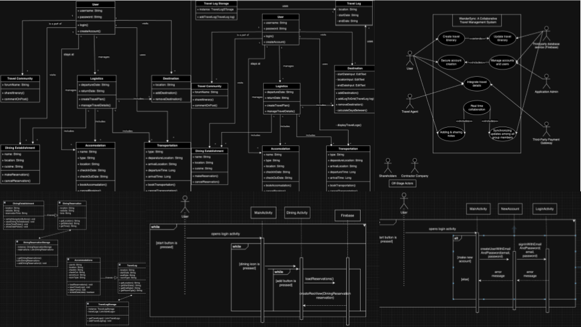

Introduction
This semester's project, WanderSync: A Collaborative Travel Management System, simplifies creating and managing travel itineraries for solo and group travel. WanderSync empowers users to collaboratively refine and contribute to travel plans in real-time. The app enables seamless organization of locations, transportation options, accommodations, dining reservations, and personal notes.
Key features include secure account creation, a user-friendly interface for itinerary management, and real-time collaboration tools for group planning. Users can integrate travel details such as destinations, transportation schedules, lodging information, and dining preferences. Additional features include shared travel agendas, synchronized updates among all group members, and options for adding and sharing notes.
Developed across four sprints, the project encompasses various software engineering principles, including object-oriented design, adherence to GRASP principles, and the implementation of design patterns like Observer and Strategy. Each sprint builds upon the previous, introducing new features and challenges, such as enhancing dining and accommodation management through databases and user interaction screens.
The project serves two primary purposes: first, to provide hands-on experience collaborating with a team to meet specific requirements, and second, to improve aptitude in key software engineering practices, including testing, documentation, and modern technology integration. With each sprint, testing is conducted alongside development, ensuring functionality and robustness through unit tests.
Design & Architecture
The application's architecture follows object-oriented design principles, incorporating both the Observer and Strategy design patterns. Below is several UML diagrams illustrating the key design components:
User Interface (UI)
Explore the app's user interface through these screenshots, showcasing the design and interaction flow:
Conclusions & Reflections
The development of WanderSync has been an invaluable learning experience. From designing the backend architecture to implementing user-friendly features, this project fostered a deep understanding of software engineering principles and collaborative teamwork.
Challenges like integrating real-time collaboration and managing dynamic updates emphasized the importance of effective communication and adaptability. Working with design patterns like Observer and Strategy not only streamlined our development process but also enhanced the application's modularity and maintainability.
Through this project, we have gained hands-on experience with object-oriented design, database management, and testing, equipping us with the skills to tackle more complex software development projects in the future.
Contributors (Project and Website)
- Shreya Mahesh
- Japleen Kaur
- Sritha Bhupatiraju
- Trisha Nittala
- Archita Manasvi
- Srihasa Penchikala